Limitele funcțiilor elementare
Limitele funcțiilor elementare în punctele de acumulare ale domeniilor lor de definiție se pot calcula folosind operațiile cu șiruri care au limită și teorema lui Heine.
Fie  un interval de numere reale,
un interval de numere reale,  o funcție elementară și
o funcție elementară și  un punct de acumulare al mulțimii
un punct de acumulare al mulțimii  . Atunci are loc următorul rezultat:
. Atunci are loc următorul rezultat:
Teorema LF5:
Fie funcția elementară și un punct de acumulare al mulțimii din domeniul de definiție al funcției  . Atunci .
. Atunci .
Exemple:
- Fie funcția
 ,
,  . Să se calculeze limita funcției date în punctul .
. Să se calculeze limita funcției date în punctul .
Rezolvare:
Cum punctul aparține domeniului de definiție al funcției date, adică , conform Teoremei LF5 vom avea că:
 .
.
- Fie funcția ,
 . Să se calculeze limita funcției în punctul 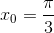.
. Să se calculeze limita funcției în punctul 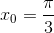.
Rezolvare:
Deoarece  , aplicând Teorema LF5, avem că:
, aplicând Teorema LF5, avem că:
.
Teorema de mai sus ne arată faptul că limita unei funcții elementare calculată într-un punct al domeniului de definiție este valoarea funcției în acel punct. Așadar, calculul unei astfel de limite nu prezintă mari dificultăți.
În cazul în care calculăm limita unei funcții elementare într-un punct de acumulare al mulțimii care nu aparține domeniului de definiție al funcției, vom utiliza fie graficul funcției date, fie anumite operații cu limite de șiruri.
În continuare, vom prezenta câteva din limitele funcțiilor elementare. Exemplele prezentate în această pagină vor ilustra formulele limitelor pentru fiecare funcție elementară în anumite puncte de acumulare ale domeniului de definiție. Metoda folosită în majoritatea exemplelor va fi metoda grafică; astfel vom putea intui rezultatul dorit printr-o lecturare grafică. Vom urmări comportarea graficului funcției date (pe axa verticală) în funcție de variabila funcției (pe axa orizontală).
Funcția constantă
Fie funcția  , cu . Atunci , pentru orice
, cu . Atunci , pentru orice  .
.
Exemple:
- Fie funcția , .
Desenăm graficul funcției .
Se observă că funcția ia valoarea  pe toată dreapta reală, deci , pentru orice
pe toată dreapta reală, deci , pentru orice  .
.
- Fără a mai fi nevoie a se trasa graficul, putem afirma următoarele:
- ;
- ;
- ;
- ,
pentru orice .
În concluzie, limita unei constante în orice punct de pe dreapta reală este constanta dată.
Funcția putere
În cazul funcției putere, trebuie să abordăm, pe rând, cazul în care exponentul este număr natural și cazul în care exponentul este un număr întreg negativ.
- Fie , 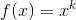, cu
 . Atunci , pentru orice .
. Atunci , pentru orice . - Fie , , cu . Atunci au loc următoarele:
- , pentru ;
- ;
- .
Exemple:
- Fie funcția ,
 .
.
Trasăm graficul funcției .
Din grafic, se poate observa că:
- ;
- ;
- 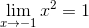;
- ;
- .
Calculăm valorile funcției în punctele în care am estimat limitele de mai sus.
Atunci când variabila  tinde la
tinde la  sau la
sau la  , funcția va tinde la .
, funcția va tinde la .
În concluzie, , pentru orice .
- Fie funcția , .
Vom trasa graficul funcției .
Se observă că și .
- Fie funcția 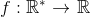, .
Se trasează graficul funcției .
Conform graficului, avem că:
- ;
- .
Pentru a calcula limita funcției date în punctul  , calculăm limitele laterale.
, calculăm limitele laterale.
-(ne uităm pe graficul funcției în stânga punctului și observăm că funcția tinde la când tinde la  );
);
- 0}}x^{-3}=+\infty">(ne uităm pe graficul funcției în dreapta punctului și observăm că funcția tinde la când tinde la );
Rezultă că 0}}x^{-3}">.
În concluzie, nu există .
Funcția polinomială
Fie funcția , . Funcția se numește funcția polinomială de gradul  ,
,  .
.
Atunci avem:
;
.
Pentru alte detalii legate de funcția polinomială, puteți consulta Ghid | Polinoame.
Exemple:
- Fie funcția de gradul I , .
Graficul funcției este următorul:
Avem că și . (Graficul funcției este o dreaptă care parcurge toată dreapta reală, de la la .)
- Fie funcția de gradul II , .
Graficul acestei funcții este:
Avem: și . (Graficul funcției este o parabolă convexă - deoarece coeficientul termenului de grad II este număr pozitiv - deci limitele funcției la și la vor fi ambele .)
- Fie funcția de gradul III , .
Din graficul funcției se poate observa că și .
Funcția radical de ordin par
Fie , , cu  , par. Din graficul funcției se deduce că .
, par. Din graficul funcției se deduce că .
Exemplu:
Graficul funcției  , este:
, este:
.
Se observă că funcția tinde crescător la , adică .
Funcția radical de ordin impar
Fie , , cu , impar. Din graficul funcției se poate observa că și .
Exemplu:
Funcția , are următorul grafic:
.
Avem că și .
Funcția exponențială
Fie , cu 0, a\ne 1">. În funcție de valoarea lui  , funcția exponențială va avea graficele de mai jos (pentru 1"> și pentru ):
, funcția exponențială va avea graficele de mai jos (pentru 1"> și pentru ):
Atunci funcția exponențială va avea limitele:
1\\ 0, & a< 1 \end{cases}">;
1\\ +\infty, & a< 1 \end{cases}">.
Exemple:
- Fie funcția , , având graficul:
.
Se observă că și .
- Fie funcția exponențială , . Graficul funcției date este:
.
Avem că  și .
și .
Funcția logaritmică
Fie  , , cu . Mai jos se găsesc graficele funcției logaritmice în funcție de valoarea lui (pentru 1"> și pentru
, , cu . Mai jos se găsesc graficele funcției logaritmice în funcție de valoarea lui (pentru 1"> și pentru  ).
).
Se obțin următoarele limite (prin lecturarea graficelor):
1\\ -\infty, & a< 1 \end{cases}">;
0}}\log_ax= \begin{cases} -\infty, & a> 1\\ +\infty, & a< 1 \end{cases}">.
Exemple:
- Fie funcția , . Conform graficului funcției,
,
avem că și 0}}\log_2 x= -\infty">.
În acest caz, nu putem calcula limita funcției la deoarece funcția este definită doar pe intervalul  .
.
- Fie funcția , . Graficul funcției este:
.
Se observă că 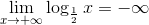 și 0}}\log_{\frac{1}{2}} x= +\infty">.
Funcții raționale
Fie  două funcții polinomiale de gradul
două funcții polinomiale de gradul  , respectiv
, respectiv  și . Adică cele două funcții au expresiile:
și . Adică cele două funcții au expresiile:
;
.
Dacă sunt soluțiile ecuației  , introducem mulțimea și funcția rațională , .
, introducem mulțimea și funcția rațională , .
Limitele acestor funcții pot fi:
- Dacă , atunci . (Adică avem .)
- Dacă 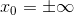, atunci
q\\ \\ \displaystyle\frac{a_n}{b_n}, & p= q\\ \\ 0, & p< q \end{cases}">
și
q\\ \\ \displaystyle\frac{a_n}{b_n}, & p= q\\ \\ 0, & p< q \end{cases}">.
Exemple:
- Fie funcțiile , și . Să se calculeze .
Rezolvare:
Calculăm limita cerută aplicând Teorema LF5:
.
Calculăm  .
.
Calculăm .
Avem că:
- Fie funcțiile , și 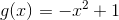. Să se calculeze și .
Rezolvare:
Funcția are gradul mai mare decât funcția  , deci vom avea:
, deci vom avea:
.
- Fie funcțiile , și . Să se calculeze și .
Rezolvare:
Funcțiile și au același grad. Deci limitele cerute sunt:
.
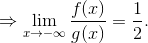
- Fie funcțiile , și . Să se calculeze și .
Rezolvare:
Gradul funcției este mai mic decât gradul funcției . Deci vom avea:
.
Funcții trigonometrice directe
Mai jos se găsesc graficele funcțiilor sinus, cosinus, tangentă și cotangentă.
Fiind funcții periodice pe dreapta reală, funcțiile trigonometrice directe sinus, cosinus, tangentă și cotangentă nu au limită la și .
Totuși, putem calcula limitele funcțiilor trigonometrice în anumite puncte ale dreptei reale:
- 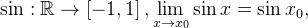 oricare ar fi ;
- oricare ar fi
 ;
; - 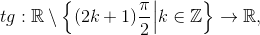
- oricare ar fi ;
- ;
- \frac{\pi}{2}+k\pi }}tg \ x=-\infty">;
- oricare ar fi ;
- ;
- k\pi }}tg \ x=+\infty">.
Funcțiile trigonometrice inverse
Funcțiile trigonometrice sunt bijective doar pe anumite restricții ale domeniului de definiție. Astfel, se construiesc funcțiile trigonometrice inverse, definite astfel:
- 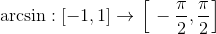;
- ;
- 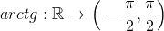;
- .
Graficele acestor funcții sunt:
Limitele acestor funcții sunt:
- , oricare ar fi ;
- , oricare ar fi ;
- , oricare ar fi ;
- ;
- ;
- , oricare ar fi ;
- ;
- .
Alte limite remarcabile
Limitele de mai jos rezultă din calculul limitelor unor șiruri remarcabile, studiate în ghidul Limite de șiruri.
- ;
- ;
- ;
- 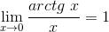;
- ;
- ;
- ;
- 0, a\ne 1">.
Observație:
Toate limitele de funcții prezentate în acest capitol se pot aplica și la funcții compuse (funcții care depind de ).
Limite de funcții compuse
Fie două intervale de numere reale, și două funcții reale de variabilă reală și un punct de acumulare al mulțimii  . Atunci introducem funcția , , care este funcția compusă a funcțiilor și .
. Atunci introducem funcția , , care este funcția compusă a funcțiilor și .
Se pune problema existenței limitei funcției în punctul de acumulare .
Această funcție are limită în anumite condiții, condiții prezentate în următorul rezultat:
Teorema LF6:
Fie un punct de acumulare al mulțimii și un punct de acumulare al mulțimii . Dacă:
- pentru orice
atunci
Observații:
- Dacă și atunci . (Adică limita funcției comută cu valoarea funcției.)
- Dacă și 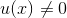, pentru orice
 , atunci au loc următoarele:
, atunci au loc următoarele:
 ;
;- ;
- ;
- ;
- ;
- ;
- ;
- 0, a\ne 1">.
Exemplu:
Să se calculeze 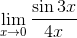.
Rezolvare:
Vom calcula limita cerută efectuând anumite artificii de calcul, astfel:
- considerăm ;
- observăm că:
- facem următoarele calcule:
- dar, cum avem limita remarcabilă , va rezulta:
.
Observație:
La fel se poate proceda pentru oricare din limitele remarcabile ale funcțiilor compuse prezentate anterior.